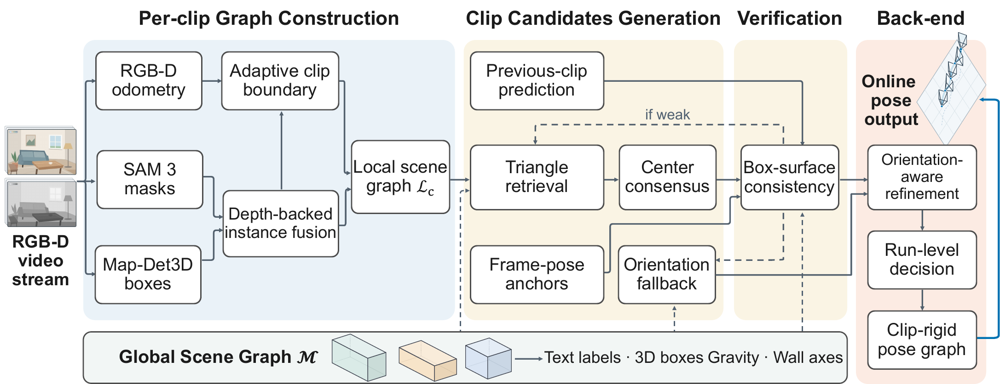
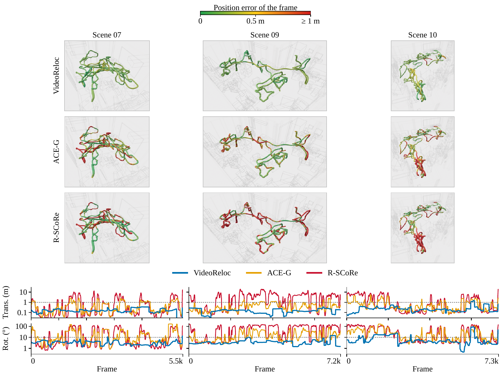

1Technical University of Munich 2Huawei Hilbert Research Center (Dresden)
†Corresponding author
Given a compact semantic scene graph, long-term indoor video relocalization estimates a map-frame trajectory after lighting and furniture changes. Visual methods rely on appearance and become unreliable under these changes; localizing one frame at a time from object classes and geometry instead leaves sparse, ambiguous evidence. We introduce VideoReloc, whose adaptive clips use odometry to gather spatial evidence until object and motion criteria are met, adapting query length to the observed scene. Its run-level decision rechecks conflicting placements using evidence accumulated across connected clips, stabilizing the trajectory beyond adjacent-clip tracking. Hypothesis-first registration proposes poses from object triplets and verifies each using clip-wide object centers and box surfaces. Orientation-aware refinement uses box faces, gravity and wall directions to resolve ambiguity in camera orientation and refine the full pose. This reframes sparse-map relocalization as verification of spatially extended video queries, moving discriminative support from stored appearance to temporal context and permitting a 100 kB map of class-labelled boxes. On RIO10 and ReplicaCAD, the all-frame localization success rate at 1 m/10° is 73.5 % and 61.1 % under causal evaluation, rising to 90.6 % and 74.8 % with clip closure. The evaluated per-frame scene coordinate regressors reach up to 47.6 % and 49.8 %, respectively, with maps of 12.6–42 MB.

VideoReloc replaces mapping-visit appearance with a persistent map of class-labelled 3D boxes, about 100 kB per room, and draws discriminative support from the incoming video. Adaptive clips use odometry to turn partial frame observations into a spatially extended query, closing after sufficient object evidence and camera travel.

RIO10 contains ten rooms scanned weeks apart with furniture and lighting changes; maps use the first visit, and evaluation includes all 34,415 re-scan frames. ReplicaCAD is a controlled evaluation built from six authored layouts of one apartment, rendered along the same 4,000-frame path under daylight, warm evening lights and two warm night lamps; the map is built from a separate 6,000-frame daylight tour. Recall counts a frame as successful only when neither position nor rotation error exceeds the stated thresholds; frames without an estimate count as failures.
| RIO10, 10 re-scans, 34,415 frames | ReplicaCAD, 18 tours, 72,000 frames | ||||||
|---|---|---|---|---|---|---|---|
| Method | Map size ↓ | Pos./rot. ↓ | R@1 m/10° ↑ | 0.25 m/5° ↑ | Pos./rot. ↓ | R@1 m/10° ↑ | 0.25 m/5° ↑ |
| HLoc | 1–2 GB | 12 cm / 3.9° | 49.8 | 41.3 | 4 cm / 0.6° | 48.4 | 44.5 |
| ACE-G | 12.6 MB | 36 cm / 11.7° | 45.5 | 25.7 | 52 cm / 8.2° | 49.8 | 37.1 |
| R-SCoRe | 42 MB | 40 cm / 12.1° | 47.6 | 38.5 | 72 cm / 9.4° | 48.6 | 42.5 |
| MSG-Loc | 1.5 MB | 161 cm / 49.3° | 1.2 | 0.1 | 265 cm / 27.7° | 11.3 | 1.3 |
| FPFH–ICP† | 6–13 MB | 11 cm / 3.4° | 22.4 | 21.7 | 1 cm / 0.2° | 10.0 | 9.9 |
| ACE-G† | 12.6 MB | 10 cm / 3.6° | 79.8 | 66.2 | 14 cm / 1.8° | 67.0 | 59.4 |
| R-SCoRe† | 42 MB | 9 cm / 3.0° | 85.8 | 71.0 | 11 cm / 1.7° | 66.7 | 59.8 |
| VideoReloc (ours), causal | 95 kB | 20 cm / 4.3° | 73.5 | 44.0 | 27 cm / 3.0° | 61.1 | 40.4 |
| VideoReloc (ours), with clip closure | 95 kB | 18 cm / 3.3° | 90.6 | 64.1 | 22 cm / 2.1° | 74.8 | 53.0 |
Protocol. Recall (%) includes all frames, with missing poses counted as failures. Causal evaluation uses frames up to the query frame; evaluation with clip closure also uses the remaining frames of that clip. Median position and rotation errors are ranked separately, and ties share rank. † marks clip-rigid controls: the same clip partition and within-clip odometry as VideoReloc, but each clip is localized independently without cross-clip tracking, run-level decisions, or pose-graph optimization. Map size and errors. Map size is the map each method builds on RIO10; ReplicaCAD maps occupy 134 kB for VideoReloc, 1.96 MB for MSG-Loc and 18.1 MB for FPFH–ICP. Median errors use only returned poses. Pose coverage (RIO10 / ReplicaCAD) is 100/100 % for the regressors, 75/68 % for HLoc, 29/12 % for FPFH–ICP, 21/61 % for MSG-Loc, 94/97 % for VideoReloc under causal evaluation and 100/99 % with clip closure. FPFH–ICP errors summarize scene medians on RIO10 and a separate replay on ReplicaCAD.
| Illumination | Rearrangement | |||||||
|---|---|---|---|---|---|---|---|---|
| Method | day | evening | night | ΔL | unchanged | rearranged | ΔR | kept |
| HLoc | 55.5 | 51.9 | 37.7 | −17.7 | 75.9 | 42.9 | −33.0 | 56 % |
| ACE-G | 53.1 | 49.6 | 46.8 | −6.3 | 78.4 | 44.1 | −34.3 | 56 % |
| R-SCoRe | 54.2 | 50.3 | 41.5 | −12.6 | 74.7 | 43.4 | −31.3 | 58 % |
| MSG-Loc | 12.2 | 12.0 | 9.6 | −2.6 | 33.0 | 6.9 | −26.1 | 21 % |
| FPFH–ICP† | 10.1 | 9.1 | 8.9 | −1.2 | 40.1 | 3.2 | −36.8 | 8 % |
| ACE-G† | 68.9 | 65.7 | 66.5 | −2.4 | 89.4 | 62.6 | −26.8 | 70 % |
| R-SCoRe† | 68.8 | 66.8 | 64.6 | −4.3 | 87.8 | 62.5 | −25.3 | 71 % |
| VideoReloc (ours), causal | 60.0 | 64.2 | 59.0 | −1.0 | 80.1 | 57.2 | −22.9 | 71 % |
| VideoReloc (ours), with clip closure | 73.8 | 76.8 | 73.9 | +0.1 | 88.5 | 72.1 | −16.4 | 81 % |
Recall (%) uses all frames; illumination averages six layouts per column, and unchanged/rearranged average three/fifteen tours. ΔL and ΔR are night–day and rearranged–unchanged changes (points); kept is rearranged/unchanged (%). Rankings use unrounded recall; ties share rank. † is defined as in the table above. FPFH–ICP factors use per-tour medians across replay seeds.
| Unit | 1 m/10° | 0.25 m/5° |
|---|---|---|
| one frame | 2.6 | 0.4 |
| 30-frame clip | 19.1 | 9.3 |
| 100-frame clip | 39.3 | 23.7 |
| 250-frame clip | 52.8 | 35.4 |
Each unit is registered independently, without tracking or a pose graph. Recall (%) uses all 34,415 frames and is measured when the unit closes.
| Mechanism | RIO10 | ReplicaCAD tours | ||||||||
|---|---|---|---|---|---|---|---|---|---|---|
| orientation-aware | run-level | adaptive | with clip closure | causal | with clip closure | causal | ||||
| coarse | fine | coarse | fine | coarse | fine | coarse | fine | |||
| 76.4 | 39.3 | 70.8 | 33.4 | 64.9 | 38.6 | 56.3 | 33.6 | |||
| ✓ | 78.5 | 44.4 | 72.5 | 38.0 | 70.4 | 45.1 | 62.0 | 41.3 | ||
| ✓ | ✓ | 81.3 | 43.9 | 70.8 | 36.2 | 78.9 | 51.6 | 69.4 | 47.1 | |
| ✓ | ✓ | 91.0 | 61.3 | 73.0 | 41.8 | 56.3 | 39.3 | 45.4 | 29.2 | |
| ✓ | ✓ | ✓ | 90.6 | 64.1 | 73.5 | 44.0 | 74.8 | 53.0 | 61.1 | 40.4 |
Recall (%) includes all frames. Coarse: 1 m/10°. Fine: 0.25 m/5°. Checkmarks indicate enabled components; empty cells indicate point-to-point refinement, no run-level decision and fixed 100-frame clips, respectively. Tracking and the pose graph remain enabled. The last row is the full VideoReloc. Bold/underline: first/second in each column.
@article{li2026videoreloc,
title = {VideoReloc: Long-Term Indoor Video Relocalization against a Kilobyte-Scale Semantic Scene Graph},
author = {Li, Qianru and Chen, Xuyang and Wang, Xuqin and Zhang, Zhenghao and Luo, Hongyi and Wu, Tao and Cremers, Daniel and Liu, Lu and Zhang, Yanfeng},
journal = {arXiv preprint},
year = {2026}
}